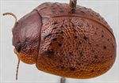
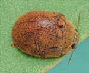
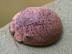
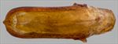
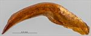
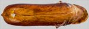
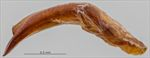
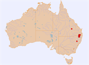

Click on images to enlarge
{kind=link}

Male, Yangan, S.E. Queensland
{kind=link}

Male, Stanthorpe, S.E. Queensland
.jpg){kind=link}

Female, Quirindi, New South Wales
{kind=link}

Aedeagus, dorsal view (Quirindi, New South Wales)
{kind=link}

Aedeagus, lateral view (Quirindi, New South Wales)
{kind=link}

Aedeagus, dorsal view (Mt Moffat N.P., central Queensland)
{kind=link}

Aedeagus, lateral view (Mt Moffat N.P., central Queensland)
{kind=link}

Distribution
Name
Trachymela sp. Ta32
Reference specimen
2003-058a, Swan Creek, Yangan, SE Queensland.
Adult Description
Length: ♂ (4.8)5.5–6.8 mm (n=33), ♀ 6.0–7.2 mm (n=27).
Colouration:
- Head: uniformly mid-brown to dark-brown or reddish-brown, mandibles with dark-brown to black tips; labrum concolorous with head or slightly paler; antennomeres 1–4 uniformly straw-brown, 5–11 concolorous or fractionally darker, sometimes with distal edges slightly darker.
- Pronotum: almost uniformly brown, concolorous with head.
- Scutellum: brown, concolorous with pronotum, sometimes with broad, darker brown border.
- Elytra: brown, concolorous with pronotum, with small, round, raised black or dark-brown (rarely only slightly darker than surrounding surface) tubercles scattered quite evenly over much of surface of disc, their density slightly decreasing towards posterior, punctures concolorous with interstices, humeral callus concolorous with surrounds or sometimes with a black area around peak.
- Venter & Legs: mesoventrite and metaventrite wholly or partially dark-brown or (rarely) almost black, elsewhere the sternites and head slightly or considerably lighter-brown; legs mid-brown, almost invariably with anterior surfaces of femora much darker or even black; inner surface of elytral epipleura brown.
- Cuticular Wax: evenly distributed, moderately thick layer of a uniform, slightly paler brown shade than surface of insect. The dark verrucae are visible above the wax layer.
Morphology:
- Head: punctures moderately sized (pd ≈ 2×ef), evenly and densely distributed, rarely rugulose interstices result in less even distribution; antennae very short (AL/BL: ♂ 36–39%, ♀ 30–33%), filiform, outer segments noticeably flattened.
- Pronotum: almost evenly curved transversely with lateral margins very slightly explanate, foveal depression shallow, usually with a clearly defined and almost round elevated area near middle; puncturation clearly impressed, similar to or very slightly coarser than that on head and rather evenly distributed in discal area, becoming much coarser from foveal depression to lateral margins, much finer and inconspicuous punctures scattered among them; interstices smooth to slightly rough in discal area, never so rough as to obscure punctures. Thickened front margins smoothly join thinner lateral margins in a smoothly rounded right-angle, with lateral margin almost straight or barely curving for 25–50% of length towards rear margin, then curving more strongly towards posteriolateral angle.
- Scutellum: smooth or slightly rough surface, if punctured, punctures are sparse, shallow, and usually very fine.
- Elytra: rounded in shape, greatest height viewed laterally is clearly in front of middle of elytral margin; surface evenly curved transversely over discal region, sometimes slightly explanate at margins, lightly curved longitudinally in anterior half, then slightly more strongly curved, a barely discernible, very shallow depression extends across surface just in front of middle; punctures large and distinct and relatively evenly distributed between verrucae and set deeply among network of raised interstices, smaller punctures scattered among them; small round verrucae, sometimes with a small puncture in centre, scattered quite evenly over most of elytral disc, with a slight reduction in density over antero-median depression and in posterior third, some with a tendency to align in longitudinal rows; a short row of about three verrucae extending from base of elytron about halfway between scutellum and humeral callus towards antero-median depression is rarely joined into a continuous ridge; surface continuous under humeral callus. Vertical extension of epipleura considerable (HCE/PW = 0.35–0.38).
- Venter: prosternal process parallel-sided over most of its length, sometimes narrower anteriorly, lightly closed anteriorly; short setae very sparsely distributed over prosternal process and mesoventrite, a single seta on anterior and median trochanter; front edge of metaventrite beveled, truncate; inner edge of epipleura lacking setae.
Male Genitalia (Aedeagus):
- Dimensions: moderately long (LPE/BL = 26–33%).
- Dorsal view: shaft broadest at junction with basal section, from where the sides (prominently darker than inner region) are initially sub-parallel, then diverging very slightly just behind ostium before converging gradually and a little unevenly towards apex, rate of convergence becoming much greater just before apex; dorsal surface smoothly curved with faint dorso-median channel usually present for most of length, tip very slightly protruding; ostium quite large, with dorsal ostial processes protruding far forwards.
- Lateral view: almost evenly and moderately curved throughout its length, thinning very slightly towards apex before ostium, tip slightly deflexed.
Immature Stages
- Unknown.
Similar species
- Ta16: very similar to Ta32, especially in the distribution and density of verrucae on the elytra. It may be distinguished from Ta32 by the darker colouration of the scutellum and ventral surface, as well as the dark-brown colouration of the inner surface of the epipleura.
- Ta65: difficult to distinguish from Ta32, especially females. Ta65 is almost completely dark-brown ventrally while Ta32 is lighter in colour, with only its thoracic ventrites dark-brown. The femora of Ta32 tend to have the anterior surface noticeably darker in shade than the posterior surface, while in Ta65 they are more uniformly shaded on both sides. The distal antennomeres of Ta65 are invariably noticeably darker than the proximal ones, while the antennae of Ta32 tend to be of a more uniform shade throughout.
- Ta218: rather similar to Ta32, with the aedeagus of the two species essentially identical in shape and size. Ta218 differs by its verrucae in the main being quite inconspicuous, concolorous with or only slightly darker than the elytral surface, and not at all scattered evenly over the elytral surface as small discrete tubercles. The cuticular wax tends to be less evenly distributed than that of Ta32.
Notes
- Host Associations: Ta32 is found primarily on the box-barked group of Eucalyptus (subgenus Symphyomyrtus, section Adnataria), in particular Eucalyptus albens (n=5), E. conica (n=4), E. moluccana (n=4), and E. melliodora (n=1), with 17 records from unidentified box-type eucalypts. A record each from a red-gum group eucalypt, E. bridgesiana, and Angophora are likely spurious.
- Morphological Variation: Some specimens from central Queensland (Carnarvon National Park, Mt Moffat section) differ slightly from typical specimens of Ta32 in having elytral verrucae that are barely darker than the surrounding surface and thus quite inconspicuous. The male has an aedeagus that is fractionally more slender than that of typical Ta32, and has an ostium that appears slightly more closed posteriorly, approaching the closed oval ostium that is typical of species in the "ovatum" sub-group. These specimens were found together with another specimen of Ta32 that has the more typical aedeagus. A very small (BL < 5 mm) specimen collected near Tenterfield has an aedeagus with the same shape as a typical Ta32, with LPE/BL just a little below the expected value; it was collected with other typical Ta32 specimens and is almost certainly conspecific.
Copyright © 2026. All rights reserved.